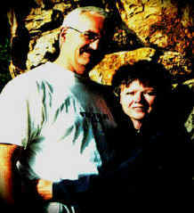

Sharon M.
Sharon M.
Papworth
Director
of Ricks College
Writing Center
252 / Writing About Literature
English 111
-
Syllabus
-
Paper Assignments
"Most of the rewrite is
cleaning. Don't describe it, show it . . . the hardest thing in the world is
simplicity."
-- James Baldwin
"How do I know what I think until I see what I say." --E.M. Forester
|
| Syllabus | Principles of Writing |
| Handouts | Papers |
| Examples | Library Editing |
| Letters to New Students | Research Check List |
| Tips for Formatting | Research Packet |
Office:
McKay 280
Ext. 1967
e-mail:
papworth@ricks.edu

"It just seems to me if writers can assemble, in language, something that bears any relation to experience--especially important experience, experience we care about, moving and powerful experience--then it is worth trying. The opportunities for offense and failure are always aplenty."